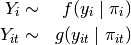
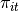
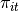
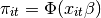
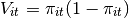
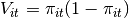
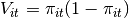
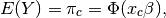

The GEE probit estimates the same model as the standard probit
regression (appropriate when you have a dichotomous dependent variable
and a set of explanatory variables). Unlike in probit regression, GEE
probit allows for dependence within clusters, such as in longitudinal
data, although its use is not limited to just panel data. The user must
first specify a “working” correlation matrix for the clusters, which
models the dependence of each observation with other observations in the
same cluster. The “working” correlation matrix is a  matrix of correlations, where
matrix of correlations, where  is the size of the largest
cluster and the elements of the matrix are correlations between
within-cluster observations. The appeal of GEE models is that it gives
consistent estimates of the parameters and consistent estimates of the
standard errors can be obtained using a robust “sandwich” estimator even
if the “working” correlation matrix is incorrectly specified. If the
“working” correlation matrix is correctly specified, GEE models will
give more efficient estimates of the parameters. GEE models measure
population-averaged effects as opposed to cluster-specific effects.
is the size of the largest
cluster and the elements of the matrix are correlations between
within-cluster observations. The appeal of GEE models is that it gives
consistent estimates of the parameters and consistent estimates of the
standard errors can be obtained using a robust “sandwich” estimator even
if the “working” correlation matrix is incorrectly specified. If the
“working” correlation matrix is correctly specified, GEE models will
give more efficient estimates of the parameters. GEE models measure
population-averaged effects as opposed to cluster-specific effects.
With reference classes:
z5 <- zgammagee$new()
z5$zelig(Y ~ X1 + X2, model = "probit.gee",
id = "X3", data = mydata)
z5$setx()
z5$sim()
With the Zelig 4 compatibility wrappers:
z.out <- zelig(Y ~ X1 + X2, model = "probit.gee",
id = "X3", data = mydata)
x.out <- setx(z.out)
s.out <- sim(z.out, x = x.out)
where id is a variable which identifies the clusters. The data should be sorted by id and should be ordered within each cluster when appropriate.
Use the following arguments to specify the structure of the “working” correlations within clusters:
Attaching the sample turnout dataset:
data(turnout)
Variable identifying clusters
turnout$cluster <- rep(c(1:200), 10)
sorted.turnout <- turnout[order(turnout$cluster), ]
Estimating parameter values:
z.out1 <- zelig(vote ~ race + educate, model = "probit.gee",
id = "cluster", data = sorted.turnout)
## How to cite this model in Zelig:
## Patrick Lam. 2011.
## probitgee: General Estimating Equation for Probit Regression
## in Kosuke Imai, Gary King, and Olivia Lau, "Zelig: Everyone's Statistical Software,"
## http://zeligproject.org/
Setting values for the explanatory variables to their default values:
x.out1 <- setx(z.out1)
Simulating quantities of interest:
s.out1 <- sim(z.out1, x = x.out1)
summary(s.out1)
##
## sim x :
## -----
## ev
## mean sd 50% 2.5% 97.5%
## [1,] 0.7719346 0.01156346 0.7724911 0.7469315 0.7928431
## pv
## 0 1
## [1,] 0.211 0.789
plot(s.out1)
Zelig-probitgee1
Estimating the risk difference (and risk ratio) between low education (25th percentile) and high education (75th percentile) while all the other variables held at their default values.
x.high <- setx(z.out1, educate = quantile(turnout$educate, prob = 0.75))
x.low <- setx(z.out1, educate = quantile(turnout$educate, prob = 0.25))
s.out2 <- sim(z.out1, x = x.high, x1 = x.low)
summary(s.out2)
##
## sim x :
## -----
## ev
## mean sd 50% 2.5% 97.5%
## [1,] 0.8237343 0.01061273 0.8236037 0.8026679 0.844526
## pv
## 0 1
## [1,] 0.161 0.839
##
## sim x1 :
## -----
## ev
## mean sd 50% 2.5% 97.5%
## [1,] 0.7060597 0.01448646 0.7061273 0.6777558 0.7337379
## pv
## 0 1
## [1,] 0.302 0.698
## fd
## mean sd 50% 2.5% 97.5%
## [1,] -0.1176746 0.01185536 -0.1173111 -0.1426568 -0.09487269
plot(s.out2)
Zelig-probitgee2
User-defined correlation structure
corr.mat <- matrix(rep(0.5, 100), nrow = 10, ncol = 10)
diag(corr.mat) <- 1
corr.mat <- fixed2Zcor(corr.mat, id=sorted.turnout$cluster, waves=sorted.turnout$race)
Generating empirical estimates:
z.out2 <- zelig(vote ~ race + educate, model = "probit.gee",
id = "cluster", data = sorted.turnout,
corstr = "fixed", zcor = corr.mat)
## How to cite this model in Zelig:
## Patrick Lam. 2011.
## probitgee: General Estimating Equation for Probit Regression
## in Kosuke Imai, Gary King, and Olivia Lau, "Zelig: Everyone's Statistical Software,"
## http://zeligproject.org/
Viewing the regression output:
summary(z.out2)
Suppose we have a panel dataset, with  denoting the binary
dependent variable for unit
denoting the binary
dependent variable for unit  at time
at time  .
.  is a vector or cluster of correlated data where
is a vector or cluster of correlated data where  is
correlated with
is
correlated with  for some or all
for some or all
 . Note that the model assumes correlations within
but independence across .
. Note that the model assumes correlations within
but independence across .
The stochastic component is given by the joint and marginal distributions

where  and
and  are unspecified distributions with
means
are unspecified distributions with
means  and . GEE models make no
distributional assumptions and only require three specifications: a
mean function, a variance function, and a correlation structure.
and . GEE models make no
distributional assumptions and only require three specifications: a
mean function, a variance function, and a correlation structure.
The systematic component is the mean function, given by:

where  is the cumulative distribution function of
the Normal distribution with mean 0 and unit variance,
is the cumulative distribution function of
the Normal distribution with mean 0 and unit variance,  is the vector of
is the vector of  explanatory variables for unit
at time and
explanatory variables for unit
at time and  is the vector of coefficients.
is the vector of coefficients.
The variance function is given by:

The correlation structure is defined by a
“working” correlation matrix, where is the size of the
largest cluster. Users must specify the structure of the “working”
correlation matrix a priori. The “working” correlation matrix then
enters the variance term for each , given by:

where  is a diagonal matrix with the
variance function  as the
th diagonal element,
is a diagonal matrix with the
variance function  as the
th diagonal element,  is the
“working” correlation matrix, and
is the
“working” correlation matrix, and  is a scale parameter.
The parameters are then estimated via a quasi-likelihood approach.
is a scale parameter.
The parameters are then estimated via a quasi-likelihood approach.
In GEE models, if the mean is correctly specified, but the variance and correlation structure are incorrectly specified, then GEE models provide consistent estimates of the parameters and thus the mean function as well, while consistent estimates of the standard errors can be obtained via a robust “sandwich” estimator. Similarly, if the mean and variance are correctly specified but the correlation structure is incorrectly specified, the parameters can be estimated consistently and the standard errors can be estimated consistently with the sandwich estimator. If all three are specified correctly, then the estimates of the parameters are more efficient.
The robust “sandwich” estimator gives consistent estimates of the
standard errors when the correlations are specified incorrectly only
if the number of units is relatively large and the number
of repeated periods is relatively small. Otherwise, one
should use the “naïve” model-based standard errors, which assume that
the specified correlations are close approximations to the true
underlying correlations. See for more details.
All quantities of interest are for marginal means rather than joint means.
The method of bootstrapping generally should not be used in GEE models. If you must bootstrap, bootstrapping should be done within clusters, which is not currently supported in Zelig. For conditional prediction models, data should be matched within clusters.
The expected values (qi$ev) for the GEE probit model are simulations of the predicted probability of a success:

given draws of from its sampling distribution, where
 is a vector of values, one for each independent
variable, chosen by the user.
is a vector of values, one for each independent
variable, chosen by the user.
The first difference (qi$fd) for the GEE probit model is defined as

The risk ratio (qi$rr) is defined as

In conditional prediction models, the average expected treatment effect (att.ev) for the treatment group is
![\frac{1}{\sum_{i=1}^n \sum_{t=1}^T tr_{it}}\sum_{i:tr_{it}=1}^n \sum_{t:tr_{it}=1}^T \left\{ Y_{it}(tr_{it}=1) -
E[Y_{it}(tr_{it}=0)] \right\},](_images/math/40ac87a54bf074ab721d0606edc354d20bfe2890.png)
where  is a binary explanatory variable defining the
treatment (
is a binary explanatory variable defining the
treatment ( ) and control (
) and control ( ) groups.
Variation in the simulations are due to uncertainty in simulating
) groups.
Variation in the simulations are due to uncertainty in simulating
![E[Y_{it}(tr_{it}=0)]](_images/math/55447d1ae15443b039fe51a56aee680735c5eff7.png) , the counterfactual expected value of
for observations in the treatment group, under the
assumption that everything stays the same except that the treatment
indicator is switched to .
, the counterfactual expected value of
for observations in the treatment group, under the
assumption that everything stays the same except that the treatment
indicator is switched to .
The output of each Zelig command contains useful information which you may view. For examle, if you run z.out <- zelig(y ~ x, model = probit.gee, id, data), then you may examine the available information in z.out by using names(z.out), see the coefficients by using z.out$coefficients, and a default summary of information through summary(z.out). Other elements available through the $ operator are listed below.

 -values, and
-values, and  -statistics.
-statistics. x-observation (for more than one x-observation). Available quantities
are:
x-observation (for more than one x-observation). Available quantities
are:The geeglm function is part of the geepack package by Søren Højsgaard, Ulrich Halekoh and Jun Yan. Advanced users may wish to refer to help(geepack) and help(family).